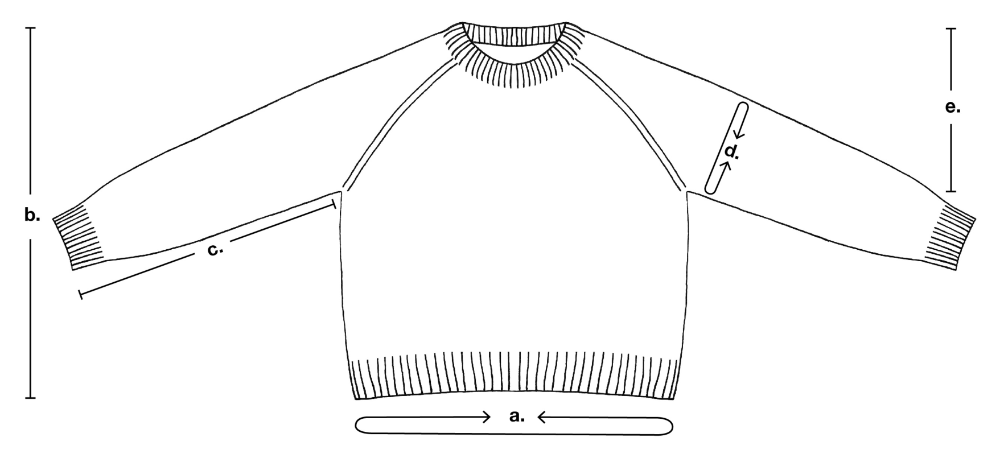

Written walkthrough for sizes S and M · pattern by Mette Wendelboe Okkels (PetiteKnit)
A classic sweater worked from the top down in stockinette, shaped with raglan increases. It is knit in five stages: neck rib, short rows that raise the back of the neck, raglan rounds, then the body and the two sleeves, each in the round. Numbers are given as S / M.
The shape in one breath. You cast on the neckline and work a rib collar. Short rows then lift the back of the neck while the first increases begin. Four raglan lines grow the yoke until the sleeves have enough stitches. You put the sleeves on holders, knit the body down in the round, and pick the sleeves back up.
Homework for the first class. Cast on, join in the round and work the 1.5 in (4 cm) of 1x1 rib. Stop before you change needles and place the markers. If you use a long-tail cast on instead of the Italian cast-on, skip the 2 rows of double knitting. German short rows are taught later, not in the homework.
Materials
Yarn, held together: 250 / 300 g Sunday (Sandnes Garn), Arwetta (Filcolana) or Tvinni (Isager), with 125 / 150 g Primo Tynn Silk Mohair (Sandnes Garn), Tilia (Filcolana) or Silk Mohair (Isager)
3 mm (US2½): circular 40 cm (16 in) and 80 or 100 cm (32 or 40 in), plus double-pointed needles
4 mm (US6): circular 40, 80 and 100 cm (16, 32 and 40 in), plus double-pointed needles
Markers, stitch holders, tapestry needle
Gauge: 21 sts and 28 rows = 10 cm / 4 in in stockinette on 4 mm (US6). Wash the swatch before you measure it. The two yarns are knitted together as one strand, so pick up both strands at every make-one and cast-on stitch.
Measurements & schematic

Letters a-e match the first five rows of the table. Schematic from the original pattern.
S
M
a. Finished bust
41¼ in / 105 cm
43 in / 109 cm
Fits bust of
85-90 cm
90-95 cm
b. Length mid back
21¾ in / 55 cm
22 in / 56 cm
c. Inner sleeve length
18 in / 46 cm
18 in / 46 cm
d. Upper arm
15 in / 38 cm
16¼ in / 41 cm
e. Armhole depth
9 in / 23 cm
9½ in / 24 cm
Cast on
108 sts
112 sts
Markers: back / sleeve / front
20 / 12 / 40
20 / 14 / 40
After the short rows
148 sts
152 sts
Raglan Rounds 1-2 worked
27 times
29 times
Stitches at the end of the yoke
364
384
Body stitches after the divide
220
228
Body before the rib
19 in / 48 cm
19¼ in / 49 cm
Body after the decrease
202
210
Sleeve stitches picked up
80
86
Sleeve decreases
13 times, every 8th round
15 times, every 7th round
Sleeve before the rib
15¼ in / 39 cm
15¼ in / 39 cm
Sleeve stitches before the rib
54
56
Fit notes
Ease: the designer builds in about 15 cm (6 in) of positive ease for the smaller sizes, so S and M are relaxed fits. S fits a 85-90 cm bust, M fits 90-95 cm.
Adjusting length: the body and the sleeves are the only places to adjust, and both are knit in plain stockinette, so you can try on and keep going. These are my notes, not the pattern's.
Abbreviations
BOR beginning of round · RS / WS right / wrong side · k knit · p purl · pm / sm place / slip marker · st(s) stitch(es) · tbl through the back loop
k2tog knit 2 sts together, a right-leaning decrease
M1R make one right: pick up the strand between 2 sts from back to front with the left needle and knit it (purl it on the WS)
M1L make one left: pick up the strand between 2 sts from front to back and knit it through the back loop (purl it through the back loop on the WS)
DS double stitch, left behind by each German short row turn. Work both of its legs together as one stitch the next time you reach it.
Raglan st the single stitch between two markers. Knit it on RS rows and rounds, purl it on WS rows. The increases sit on both sides of it.
The increase and decrease stitches are underlined in orange wherever they appear below. Videos for the Italian cast-on, German short rows and Italian bind-off are on the designer's site, www.petiteknit.com.
1. Neck: cast on and rib
CO 108 / 112 sts on a 3 mm (US2½) 40 cm (16 in) circular needle with the Italian cast-on.
A long-tail cast on works too. Cast on loosely because this is the neckline, and try one needle size larger for the cast-on if your edge tends to be tight.
Double knitting, 2 rows. Row 1: *k1, slip 1 st purl-wise with yarn in front*, repeat from * to * to end of row. Row 2: work the same.
Only with the Italian cast-on. Skip both rows if you used a long-tail cast on.
Join in the round and work 4 cm (1½ in) in 1x1 rib (k1, p1). Place a marker for BOR.
Your stitch count is even, so the rib lines up all the way around.
Change to a 4 mm (US6) 40 cm (16 in) circular needle by working the rib sts onto the new needle.
2. Place the raglan markers
20 sts (right back), pm, 1 raglan st, pm, 12 / 14 sts (right sleeve), pm, 1 raglan st, pm, 40 sts (front), pm, 1 raglan st, pm, 12 / 14 sts (left sleeve), pm, 1 raglan st, pm, 20 sts (left back).
BOR is the middle of the back. Check: 20+1+12+1+40+1+12+1+20 = 108 for S, and 20+1+14+1+40+1+14+1+20 = 112 for M.
Two markers around every raglan stitch. Each raglan line is a single stitch with a marker on both sides. You will increase on both sides of it, so the marker needs to sit outside each increase.
Figure 1. Place a marker on both sides of each single raglan stitch, so the increases can sit just outside it. The two back pieces together make the 40 back sts, split at the BOR marker.
Figure 2. The same markers seen from the front. Each raglan line is one stitch wide with a marker either side, and the lines run from the neck to the underarms (two show here, two more are on the back). The wearer's right is on the left of the picture.
3. Short rows and first increases
German short rows raise the back of the neck so the collar sits higher at the back than at the front. The raglan increases start at the same time. Each pass of Steps 1-4 is worked from BOR, and each pass turns a little closer to the center front.
Step 1 (RS): knit across right back, M1R, sm, k raglan st, sm, M1L, knit across right sleeve, M1R, sm, k raglan st, sm, M1L, k to the turning point, turn.
Step 2 (WS): purl to the BOR marker in the middle of the back.
Step 3 (WS): purl across left back, M1L, sm, p raglan st, sm, M1R, purl across left sleeve, M1L, sm, p raglan st, sm, M1R, p to the turning point, turn.
Step 4 (RS): knit to the BOR marker.
One pass of Steps 1-4 adds 8 sts: 4 in Step 1 and 4 in Step 3.
Work Steps 1-4 5 times in total. Each time, turn closer to the middle of the front:
Pass
Step 1 turning point
Step 3 turning point
S sts
M sts
1
k2
p2
116
120
2
DS, k2
DS, p2
124
128
3
DS, k3
DS, p3
132
136
4
DS, k3
DS, p3
140
144
5
DS, k4
DS, p4
148
152
Figure 4. The numbered bars are passes 1-5. Each pass travels a little further into the front before it turns: about 2, 4, 7, 10 and 14 stitches in from each raglan stitch (every turn adds the number in the table to the previous one). Darker bars are later passes. Not to scale.
How to read the turning points. "DS, k2" means: work to the DS from the last turn, work the DS as one stitch, knit 2 more sts, then turn. So after the first pass you move a few stitches further into the front each time. The first-pass turn after k2 is the pattern's own wording. The turns are measured from the previous turn, not from the start of the round.
Making a German short row turn (a general how-to, not from the pattern). Turn the work. Slip the first stitch purl-wise with the yarn in front. Pull the yarn firmly up and over the top of the needle toward the back, which makes the stitch look like it has two legs. That is the DS. Then work the next stitch as normal and carry on. When you come back to the DS, knit or purl both legs together as one stitch.
Check: you are back at BOR and have 148 / 152 sts: 25 right back, 1, 22 / 24 right sleeve, 1, 50 front, 1, 22 / 24 left sleeve, 1, 25 left back.
The neckline is done. Each raglan stitch now has 5 increases on either side.
4. Raglan rounds
Work in the round in stockinette and increase every other round. Change to a longer circular needle (80 or 100 cm / 32 or 40 in) when the stitches no longer fit comfortably.
Round 1: knit across right back, M1R, sm, k raglan st, sm, M1L, knit across right sleeve, M1R, sm, k raglan st, sm, M1L, knit across front, M1R, sm, k raglan st, sm, M1L, knit across left sleeve, M1R, sm, k raglan st, sm, M1L, knit across left back. +8 sts. Round 2: knit across.
Work Rounds 1 and 2 27 / 29 times in total. Checkpoints for the stitch count after each full pair:
After pair
5
10
15
20
25
Final
Size S (start 148)
188
228
268
308
348
364
Size M (start 152)
192
232
272
312
352
384
Check: 364 / 384 sts: 52 / 54 right back, 1, 76 / 82 right sleeve, 1, 104 / 108 front, 1, 76 / 82 left sleeve, 1, 52 / 54 left back.
Sizes S and M skip a step. In the pattern, larger sizes (L and up) now work extra increase rounds on the body only. The pattern marks this step as not for XXS, XS, S and M, so you go straight to dividing. The sleeves already have all the stitches they need.
5. Divide sleeves and body
Knit 52 / 54 (right back), k raglan st, place the next 76 / 82 sts on a stitch holder (right sleeve), cast on 4 new sts at the underarm with the backward loop method, k raglan st, knit 104 / 108 (front), k raglan st, place the next 76 / 82 sts on a holder (left sleeve), cast on 4 new sts at the underarm, k raglan st, knit 52 / 54 (left back).
You now have 220 / 228 sts for the body.
Place a marker for BOR in the center of the 4 new sts at the right underarm.
Figure 3. At the divide each sleeve section (purple) leaves the needles for a stitch holder, and 4 new stitches (orange) take its place. The body keeps both back sections, the front and all four raglan stitches.
The cast-on stitches. The 4 stitches at each underarm bridge the gap where the sleeve left. They make the body wide enough to fit your underarm comfortably, and you pick them up again for the sleeve.
6. Body
Work in the round in stockinette until the sweater measures 48 / 49 cm (19 / 19¼ in) mid back, measured from the cast-on edge, or to the length you want before the ribbed hem.
Decrease round: *k10, k2tog*, repeat from * to * 18 times in total, knit to end of round. = 202 / 210 sts.
Change to a 3 mm (US2½) 80 or 100 cm (32 or 40 in) circular needle and work 7 cm (2¾ in) in 1x1 rib (k1, p1).
Double knitting, 2 rounds. Round 1: *k1, slip 1 st purl-wise with yarn in front*, repeat from * to * to end of round. Round 2: *slip 1 st purl-wise with yarn behind, p1*, repeat from * to * to end of round.
Bind off with the Italian bind-off.
Video on www.petiteknit.com.
The decrease round takes the hem in slightly so the rib hugs. The 18 repeats use 198 sts, and the last 22 / 30 sts are knit plain.
7. Sleeves (make 2)
Worked in the round in stockinette on 4 mm (US6) double-pointed needles, or a circular needle with Magic Loop.
Return the 76 / 82 held sleeve sts to the needles. Pick up and knit 4 sts along the 4 underarm sts cast on for the body. = 80 / 86 sts.
Place a marker for BOR in the middle of the 4 underarm sts.
Figure 5. The sleeve is a ring: the held stitches (purple) plus the 4 stitches you pick up and knit along the 4 underarm cast-on stitches (orange). Place BOR between the second and third of the picked-up stitches.
Work in stockinette until the sleeve measures 39 cm (15¼ in) from the pick-up, or your desired length. At the same time, decrease every 8th / 7th round, 13 / 15 times in total: k1, k2tog, knit to the last 3 sts, k2tog tbl, k1.
= 54 / 56 sts when all decreases are worked.
The decrease round makes 2 fewer stitches each time:
After decrease
1
2
3
4
5
6
7
8
9
10
11
12
13
14
15
Size S (start 80)
78
76
74
72
70
68
66
64
62
60
58
56
54
–
–
Size M (start 86)
84
82
80
78
76
74
72
70
68
66
64
62
60
58
56
Decreasing and length together. Between decreases you knit 7 / 6 plain rounds. All the decreases take about 104 / 105 rounds, which at gauge is about 37 cm, so you will have 1.5-2 cm of plain knitting at the end to reach 39 cm. The 104 / 105 round count is my estimate from the gauge, not from the pattern, so trust the tape measure.
Change to 3 mm (US2½) double-pointed needles and work 7 cm (2¾ in) in 1x1 rib (k1, p1).
Work 2 rounds of double knitting as on the body, then bind off with the Italian bind-off.
Work the other sleeve identically.
Finishing
Weave in all ends.
The pattern gives no blocking steps. Follow the yarn label for washing, and block flat to the measurements above.